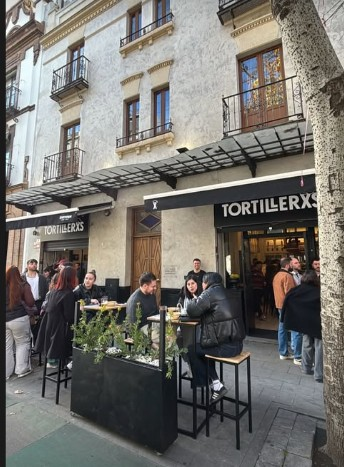
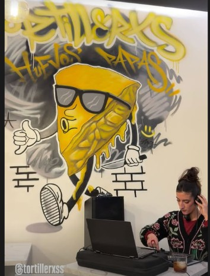
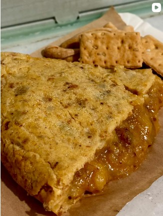
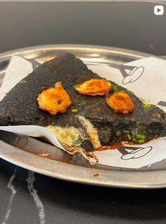
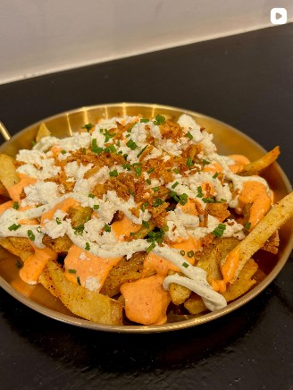
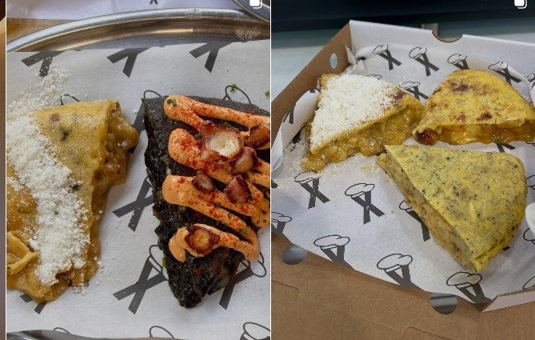
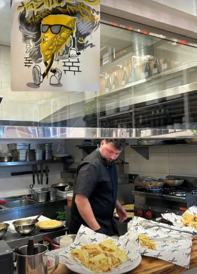
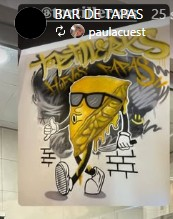

Original
Tortillerxs Recaredo
C. Recaredo, 7, Casco Antiguo, 41003 Sevilla
Horario a consulta — sigue nuestro Instagram para horarios actualizados y avisos de última hora.
Casco Antiguo · Sevilla
Tortilla española clásica y de autor, croquetas, serranitos y mucho queso derretido. Bar de tapas & take away, con acento urbano y sin tomarnos nada demasiado en serio.


Nosotros
Tortillerxs nació en el Casco Antiguo de Sevilla con una idea muy clara: la tortilla de patatas es cultura popular y merece un sitio joven, ruidoso y sin postureo. Huevos, papas y mucho cariño, servidos entre grafitis, buena música y una barra que no para.
Nuestra tortilla se hace al momento, jugosa por dentro, y también nos atrevemos a versionarla: rellena como una empanadilla gigante, en tinta de calamar, o clavada en un serranito. Para llevar, para compartir en la barra o para chorrear directamente sobre la mesa.
La carta
Precios con IVA incluido. Las tortillas enteras solo se garantizan por encargo.
Para chuparse los dedos






Ubicaciones
C. Recaredo, 7, Casco Antiguo, 41003 Sevilla
Horario a consulta — sigue nuestro Instagram para horarios actualizados y avisos de última hora.
Mercado de Feria, Sevilla
| Lunes | Cerrado |
|---|---|
| Martes | 12:30–16:30 · 20:00–23:30 |
| Miércoles | 12:30–16:30 · 20:00–23:30 |
| Jueves | 12:30–16:30 · 20:00–23:30 |
| Viernes | 12:30–16:30 · 20:00–23:30 |
| Sábado | 12:30–16:30 · 20:00–23:30 |
| Domingo | 12:30–16:30 |
Contacto
Llámanos, escríbenos o pide a domicilio. Te esperamos con la sartén puesta.